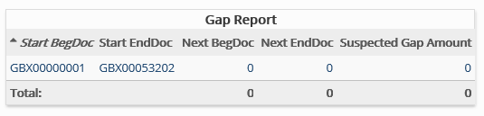

Identifies missing pages, that is, breaks in the numbering sequence of image keys (case, production, or other document numbers) for a particular case. For example, if ECL000009 is a single-page document and the next document number in the case is ECL000012, a gap exists and will be included in the report.
Complete the following selections:
Report Title: A report title is selected by default; change the title if needed.
Field BegDoc/EndDoc: Select fields containing beginning/ending document data—BEGDOC/ENDDOC, production-number fields (Begin/End Bates selections during production), or other document-numbering fields.
